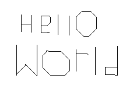

These are my favorite "finished" projects. (I will always keep working on things if I want to later down the road.) These are not really ordered in any particular way.
| Name/Title | Links | Images | Description | Thoughts and Ideas |
|---|---|---|---|---|
| Minecraft Bitmap Vanilla Shader |
|
A post-processing shader for Minecraft that is put in a resource pack. It makes Minecraft render in a bitmap style (with only black and white pixels along with dithering). |
I really like this project (not just because it nets me ~5¢ daily). I think it looks cool, and I learned a lot from making this: how post-processing shaders work, how to program in GLSL, and more on how to manipulate things the way I want with the tools I have. I'm pretty hands-off with it usually, but when Minecraft starts updating, I have to do the same to this (that's where it gets fun)! If I were to do more with this, I would try building my own tools to create the bitmap effect rather than using built-in tools in Minecraft. Minecraft comes with a bunch, but in one update (version 24w11a) they removed the notch shader program that this shader uses; I was able to just include it in the pack, though. Then, in Minecraft version 1.21.3, the notch shader program broke! I, thankfuly, was able to fix it and get it all working again :). That was a fun adventure. I'm really happy with how it'sturned out so far! |
|
| Mono C# Minimal Text Editor |
|
A minimal text editor created with Mono C#. |
I programmed this because I found that the one-step undo in the version of Notepad that was on Windows 10 was kind of anoying when programming in it (don't worry, I don't really use it as much anymore). It was a fun journey because I had never really programmed C# outside of Unity. The only problem I have with it in its current state is that when I highlight text with whitespace in it, it highlights all of the words it has "touched"--as if you had double-clicked on the text before starting to highlight--but that's an issue with the Windows RichTextBox, which I used because I wanted to make things simple. Other than that, I think it's pretty cool! (I guess that's why it's one of my favorite projects.) |
|
| Dot Draw on the GameBoy Advance |

|
Just a simple drawing program project thing I made to learn and have fun. |
My father calls it an "Etch A Sketch on the GameBoy Advance." He's not too far off. The version that I've linked is the most recent rendition of Dot Draw. I had programmed the previous version about 1-2 years before this one, but it was terribly optimized (if you remove the headers for the binaries, this version is half the size of the previous! I overused macros in the old version.) Dot Draw (both of them) were written completely in ARM assembly (well... not anymore: there's some machine code I wrote to optimize part of it). This was the first full project I had ever done in ARM. I love low-level programming; it's so simple yet can be so challenging sometimes (not Dot Draw, though. It was easy.) If there's no real challenge, then there's no real reward. One of my favorite things to do in programming is optimizing code. I love finding where something was not quite written efficiently, and it's especially cool when you optimize it as much as I did with Dot Draw (percentage wise)! |
|
| Forest Metal Engraving | None |
|
An engraving of a stylized forest on a 1x2 aluminum rectangle tube. |
Not every project I do has to be on the computer; I have a life (I think). My goal with this project was to learn to engrave, and I think I achieved that goal. I wanted to use unconventional tools to do this to challenge myself a little. I ended up using a sharpened nail and a hammer (the hammer is kind-of conventional, I guess). Because my goal was to learn to engrave, I used this newfangled A.I. thing that had just become really popular to generate an image to engrave (I'm sorry to everyone who's art had been stolen to train it. If I had thought about that at the time, maybe I wouldn't have done it that way.) I engraved it in a 1x2 inch piece of aluminum after I flattened a side. I think it turned out great! I love the way the light reflects off of it to make the cuts seem deeper than they really are. |